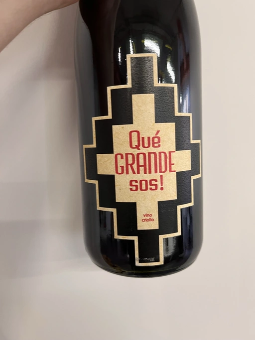

- Type
- Red Still, Dry
- Producer
- Pol Opuesto
- Vintage
- 2017
- Location
- Argentina, Uco Valley
- Grapes
- Criolla Grande
- Alcohol
- 11.5
- Sugar
- 1
- Price
- 686 UAH, 780 UAH
- Cellar
- N/A
Grapes are hand harvested and crushed by foot. Fermented in plastic water tanks outside the winery. 40 days maceration before ambient fermentation. Aged in old 225-litre French oak barrels for 8 months. Unfined, unfiltered and very small amount of sulphur added.
Ratings
2022-10-12 - 6.00
The most intriguing thing about this wine is its place of origin combined with grape. Criollo Grande from Mendoza. Yet the result is not fascinating. Simple nose and palate. Fermented berries, kōcha kinoko, and a red apple. Unexpectedly fresh, even crisp. But overall, a watery palate that lacks both depth and volume.